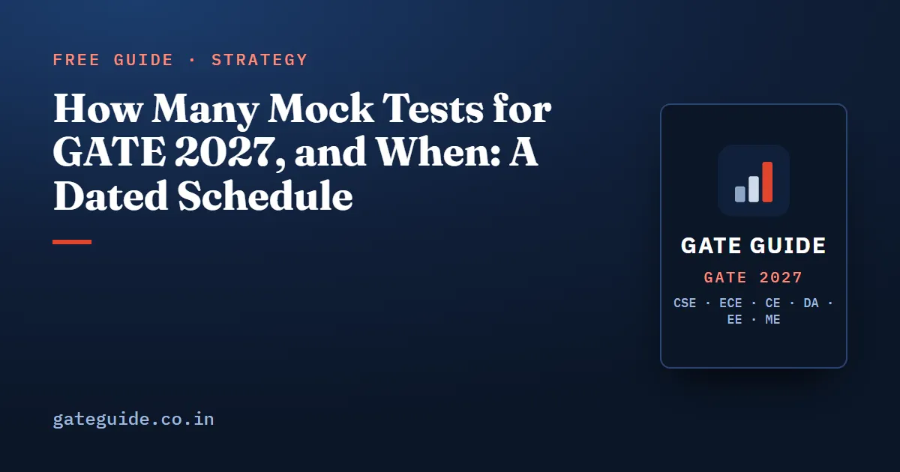

How Many Mock Tests for GATE 2027, and When: A Dated Schedule

How many mock tests should you take for GATE 2027? For a paper in the first exam week, about 11 to 14 full-length mocks, started at the end of November and spaced so that each one gets a proper review. This guide gives you a dated schedule from October 2026 to the exam, the reasoning behind that range, and a way to budget each week around it.
In this guide
Key takeaways
- Full mocks come last. Topic tests and sectional tests build the accuracy that a three-hour paper only measures.
- A realistic total is about 11 to 14 full mocks for a paper on 6 or 7 February 2027, and a few more for a later paper.
- Every mock needs at least as much review time as test time, so one three-hour mock costs at least six hours.
- Two full mocks a week is the ceiling. A third eats the hours you need to fix what the mocks reveal.
- Once your admit card shows your session, sit every remaining mock at that clock time.
- If scores stall for three mocks, pause full mocks for a week and return to sectional tests on your weakest areas.
Three kinds of test, and what each one measures
Before any schedule makes sense, you need three terms. A topic test is a short, timed set on one topic, such as one chapter of one subject. A sectional test covers one whole subject, or one block of the paper such as General Aptitude, under exam-style timing. A full-length mock is a complete paper sat in one go: every GATE 2027 paper has 65 questions for 100 marks, including 10 General Aptitude questions worth 15 marks, in three hours.
Each kind answers a different question. The full mock is the only one that tests stamina and question selection, but it is a poor teacher of content. One mock touches each topic only a handful of times, so a single bad answer tells you little.
| Test | Covers | What it tells you | When it is most useful |
|---|---|---|---|
| Topic test | One topic | Whether you can apply that idea accurately | While you are still studying the subject |
| Sectional test | One subject or block | Your accuracy and speed across a subject | After a subject is finished |
| Full-length mock | The whole paper, 3 hours | Stamina, pacing, question selection, overall level | Once every subject has been covered |
In one line: topic tests teach, sectional tests consolidate, full mocks measure.
This is why sectional tests come before full mocks. If you sit full papers while half the syllabus is unstudied, the score mostly reports what you have not read yet. That is information you already had.
The dated schedule from October 2026 to February 2027
GATE 2027 runs on 6, 7, 13, 14, 20 and 21 February 2027, each day with a forenoon and an afternoon session. The paper-wise schedule will be notified later on the official site, so the table below is built for the earliest case: a paper on Saturday 6 February. Weeks run Monday to Sunday. The full calendar of official dates is in GATE 2027 exam dates.
| Weeks | Dates | Phase | Tests in the week | Full mocks |
|---|---|---|---|---|
| 1–4 | 12 Oct – 8 Nov 2026 | Topic tests | 3–4 topic tests | 0 |
| 5–7 | 9 Nov – 29 Nov 2026 | Sectional tests | 2 sectional tests; one diagnostic mock on Sun 29 Nov | 1 |
| 8–11 | 30 Nov – 27 Dec 2026 | Full mocks, one a week | 1 mock, 1 sectional test | 4 |
| 12–13 | 28 Dec 2026 – 10 Jan 2027 | Full mocks, building up | 1–2 mocks | 2–4 |
| 14–15 | 11 Jan – 24 Jan 2027 | Full mocks, two a week | 2 mocks | 4 |
| 16–17 | 25 Jan – 5 Feb 2027 | Final stretch | At most 1 rehearsal | 0–1 |
Add the last column and the plan holds 11 full mocks at its lightest and 14 at its fullest. The official notification of exam cities is due on 4 January 2027, in week 13 of the plan.
If your paper is on 13–14 or 20–21 February, you gain one or two weeks. Spend them in the two-a-week phase, but give at least half of the extra time to fixing gaps rather than to extra papers. Dates can change, so check the current notification at gate2027.iitm.ac.in.
Why the range, and not one magic number
The range comes from two limits, not from a target. The upper limit is time: as the next section shows, two mocks a week already takes about 13 hours once review is counted. The lower limit is evidence. With only five or six mocks, one unusually easy or hard paper can hide your real trend.
So 11 to 14 is what fits between those limits in a schedule that starts full mocks at the end of November. Start later, and the honest answer is fewer mocks, reviewed properly, not the same number crammed in.
Remember: the number of mocks you review properly matters more than the number you sit.
Each of the six GATE 2027 books, for CSE, ECE, EE, ME, Civil and DA, contains ten full mock tests written in the 2027 pattern for its own paper. Ten fits inside this range, and the official brochure states that mock examination links will be available on the GATE 2027 website, which is the place to learn the interface. See what each book includes.
The review rule: review time at least equals test time
A mock produces a list of mistakes. Review turns that list into work. The rule is simple: review time for a mock must be at least as long as the time you spent sitting it.
Review means three steps. First, score the paper with the official marking scheme, including negative marks on wrong MCQs and zero for an MSQ with any wrong option. The marking scheme is the same for every paper and is set out in the GATE 2027 exam pattern and marking scheme guide. Second, write every wrong, skipped and slow question into an error log with its subtopic and cause. Third, turn the log into a short list of subtopics to re-study before the next mock.
Trap: checking the answer key, noting the score and moving on. That is scoring, not review, and it takes twenty minutes, not three hours.
Worked example: a weekly time budget
Suppose you have hours of study in a week. This is an example figure; use your own. Let be the number of full mocks that week, the hours per mock, and the review hours per mock, with . The hours left for fixing gaps are whatever the week has after testing and review:
Take two mocks of 3 hours each, with 3.5 hours of review for each:
Testing is only of the week, and most of the week goes to fixing. Now try three mocks a week with the same review:
The third mock cuts fixing time from 17 hours to 10.5, a loss of about . It adds a score and removes the hours that would have raised the next one. That is why two a week is the ceiling in the schedule.
Match your mocks to your session slot
GATE 2027 has two sessions a day: forenoon from 9:30 AM to 12:30 PM and afternoon from 2:30 PM to 5:30 PM. You sit only one session of your paper, on the date and at the time printed on your admit card. The admit card download date is still to be announced, so check the official site.
Your concentration at 10 in the morning is not the same as at 4 in the afternoon. Until the admit card arrives, alternate your mocks between the two slots. Once it shows your session, sit every remaining mock, including the final rehearsal, at that exact clock time. The GATE 2027 admit card and exam day rules guide covers reporting time and what you may carry.
Because some papers run in more than one session, raw marks in those papers are normalised across sessions. How the GATE score is calculated explains why a harder session does not count against you.
What to do when mock scores stall
A stall is three mocks in a row within a few marks of each other. Mocks also differ in difficulty, so compare your section scores and your error-log causes, not only your totals.
When a stall appears, follow these steps:
- Read the error log, not the score. Count how many lost marks came from not knowing the concept, from slips, and from running out of time.
- Pause full mocks for one week. Use the week for sectional tests on the two subjects that lost the most marks.
- Fix the dominant cause. Concept gaps need re-study. Slips need slower final checks. Time problems need a firmer rule for skipping a question.
- Check your review time. If review has slipped below test time, the stall is usually explained already.
- Return to full mocks only when the sectional scores in those two subjects have moved.
The final two weeks
For a paper on 6 February, the last stretch runs from 25 January to 5 February 2027. Learn nothing new. Revise from your error log, re-attempt the questions you got wrong in earlier mocks, and sit at most one full rehearsal in your own session slot. Keep General Aptitude sharp with short timed sets; the General Aptitude preparation guide has a method.
Quick revision
- Topic tests first, sectional tests next, full mocks last.
- Start full mocks at the end of November with one diagnostic paper.
- Aim for about 11 to 14 full mocks for a first-week paper.
- Never more than two full mocks a week.
- Review time must at least equal test time.
- Once the admit card shows your session, sit mocks at 9:30 AM or 2:30 PM to match.
- Three flat scores in a row means a week of sectional tests, not another mock.
- In the final two weeks, at most one rehearsal mock and nothing new.
Frequently asked questions
How many mock tests should I take for GATE 2027?
About 11 to 14 full-length mocks suits a paper in the first exam week, 6 or 7 February 2027, if you start full mocks at the end of November. A paper in a later week gives you room for a few more. Fewer leaves too little evidence to judge a trend, and more than two a week leaves no time to fix what the mocks reveal.
When should I start full-length GATE mock tests?
Start once you have finished topic tests and sectional tests on every subject, which in a plan beginning in October means the end of November. Take one diagnostic mock in the last week of November, then one a week through December and two a week in January. Earlier full mocks mostly measure syllabus you have not studied yet.
How much time should I spend analysing a GATE mock test?
At least as long as the test itself, so at least three hours for a three-hour mock. Use that time to score the paper honestly, sort every wrong, skipped and slow question by its cause, and list the subtopics to re-study. A mock you do not review has measured you without teaching you anything.
Should I take mock tests in the forenoon or the afternoon?
At the same clock time as your real session. GATE 2027 runs a forenoon session from 9:30 AM to 12:30 PM and an afternoon session from 2:30 PM to 5:30 PM, and your admit card states which one is yours. Until it arrives, alternate the two, then sit every remaining mock in your own slot.
What should I do if my GATE mock scores stop improving?
If three mocks in a row land within a few marks of each other, stop taking full mocks for a week. Read your error log to see which cause dominates, then go back to sectional tests on the two weakest areas. Return to full mocks only when those sectional scores have moved.
Sources
- GATE 2027 official website (IIT Madras)
- GATE 2027 important dates (official)
- GATE 2027 Information Brochure (official PDF)
Dates, fees and the syllabus are set by the GATE 2027 organising institute and can change. Always confirm at gate2027.iitm.ac.in.